SELAMAT DATANG DI E-SOP CNSD FACILITY
FACILITY: COMMUNICATION
FACILITY: SURVEILLANCE
FACILITY: DATA PROCESSING
SUB-FACILITY: VHF AIR GROUND COMMUNICATION
SOP FASILITAS: PAE T6 (VHF AIR GROUND)
SOP FASILITAS: PAE SAPPHIRE
SOP FASILITAS: BECKER
MERK : VOICE SWITCHING COMMUNICATION SYSTEM
SOP FASILITAS: VSCS GAREX 300
SOP FASILITAS: VSCS HARRIS
SUB-FACILITY: DIGITAL ATIS
SUB-FACILITY: HF-RDARA
SUB-FACILITY : VOICE RECORDER
SOP FASILITAS: RECORDER VERSADIAL
SOP FASILITAS: RECORDER NEPTUNO
SUB-FACILITY: GROUND TO GROUND (TRUNKING & HT)
SUB-FACILITY: VOR
SUB-FACILITY: DME
SUB-FACILITY: ILS
MERK LOCALIZER
SOP: LOCALIZER SELEX
MERK GLIDE PATH
MERK TDME
MERK MIDDLE MARKER
SOP: MIDDLE MARKER SELEX
MERK MSSR
SOP FASILITAS: RADAR ELDIS
PANDUAN UPDATE DAN KONFIGURASI MODUL FCOMD
Langkah 1: Persiapan dan Mount Flashdisk
1. Hubungkan Laptop RADAR dengan Modul FCOMD, lalu hubungkan GPS 16x/19x ke modul FCOMD.
2. Siapkan file unc-1_1_1 (file ada di Laptop Radar) Directory /home/.
3. Jika belum ada maka ada di flashdisk file ada di email, flashdisk iais, dan computer cns
4. Buka TerminalCTRL + ALT + T, ketik perintah berikut untuk melihat nama device flashdisk tersebut (biasanya terdeteksi dengan nama sdb atau sdc):
fdisk –l
5. Buat direktori untuk lokasi mount nanti:
mkdir –p /mnt/flashdisk
6. Lakukan mount dengan perintah berikut (sesuaikan nama sdb/sdc dengan device yang muncul):
mount /dev/sdb /mnt/flashdisk
7. Cek direktori tersebut untuk memastikan flashdisk sudah berhasil ter-mount.
Langkah 2: Koneksi dan Backup File FCOMD
1. Hubungkan laptop radar dengan modul FCOMD melalui LAN. Colok di Port Lan A saja (jadi yang hijau nanti FCOMD-A-A atau FCOMD-A-B).
2. Buka Terminal Baru, lakukan SSH ke Modul FCOMD. ssh fcomd-a-a atau ssh fcomd-a-b
3. Buka direktori flash dengan mengetik:
cd /flash
4. Sebelum mengcopy file baru, buat backup file unc yang original dengan nama berbeda:
cp unc_original unc_original_5okt22
5. Hentikan proses unc yang sedang berjalan dengan perintah:
killall unc
Langkah 3: Copy dan Update Versi UNC
1. Kembali ke terminal sebelumnya (direktori flashdisk yang tadi dibuka).
2. Copy file unc-1_1_1 ke FCOMD direktori /flash dengan mengetik:
scp unc-1_1_1 FCOMD-A-A:/flash
3. Kembali lagi ke terminal SSH FCOMD, pastikan file unc-1_1_1 sudah tercopy dengan mengetik:
ls
4. Timpa file lama dengan file baru menggunakan perintah:
cp unc-1_1_1 unc
5. Masukkan perintah berikut untuk memastikan versi unc sudah terupdate dari version 1.1.0 menjadi 1.1.1:
./unc –version
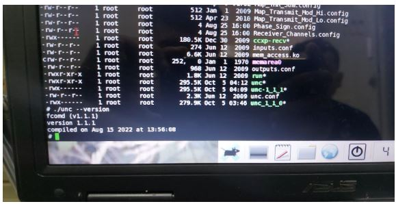
6. Setelah itu reboot FCOMD dan cek statusnya di LCMS setelah selesai reboot.
Langkah 4: Edit Konfigurasi output.conf
1. Masuk ke direktori /flash lagi untuk mengedit file output.conf:
cd /flash
2. Sebelum mengubah, backup dulu file output.conf dengan perintah:
cp output.conf output.conf_05okt22
3. Edit file output.conf dengan perintah:
vi output.conf
4. Pada baris ketiga yang dilingkari, ubah nilainya menjadi:
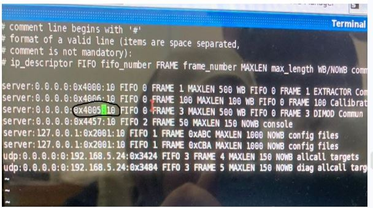
0x4005:0x020A0A
5. Petunjuk edit menggunakan vi: Tekan tombol i untuk perintah insert. Setelah selesai edit, tekan tombol Esc, lalu tekan tombol :wq (write and quit) untuk menyimpan.
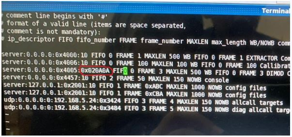
6. Setelah selesai, lakukan reboot kembali pada FCOMD.
7. Pastikan status pada LCMS berwarna hijau dan Data pada RMM sudah Valid.
NOTE / TROUBLESHOOTING:
Pada saat konfigurasi FCOMD channel A, jika setelah dilakukan prosedur diatas indikator PPS input pada tab Extractor LCMS masih berwarna merah/alarm (menandakan tegangan reference lebih besar dari tegangan input ppsnya):
Solusinya adalah melakukan adjustment pada RP1 di modul FCOMD. Prosedur lengkapnya dapat dilihat pada file PROSEDUR PENYETELAN SINYAL PPS PADA GPS RADAR ELDIS yang sudah pernah dibagikan.
SOP MENAMPILKAN EXTENDED LABEL NEW ATMAS INDRA
Langkah 1: Akses ke SMP1
1. Buka terminal dengan menekan tombol kombinasi Ctrl+Alt+T dan lakukan koneksi SSH ke smp1 melalui RCMS ruang Otomasi.
2. Cek isi direktori saat ini dan pastikan terdapat folder atau file bernama dufino.
Langkah 2: Mengedit Konfigurasi s_mode_reg_cfg
1. Masuk ke direktori konfigurasi dengan menjalankan perintah:
cd dufino/etc/
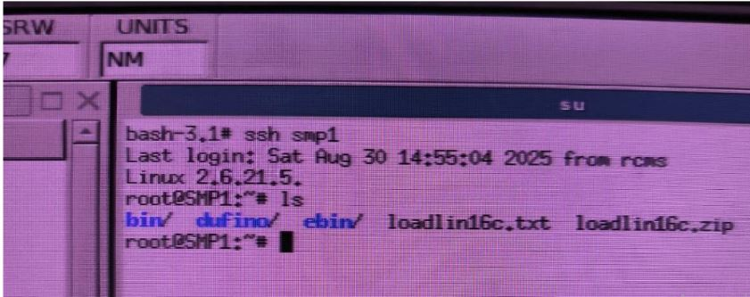
2. Cek daftar file di dalam direktori tersebut dengan mengetik perintah:
ls
3. Jalankan aplikasi Midnight Commander (MC) untuk mengedit konfigurasi dengan perintah:
mc
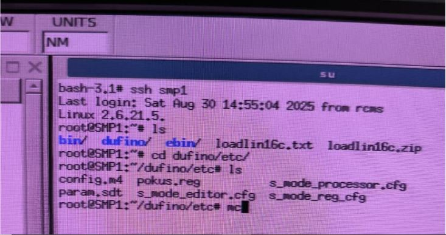
4. Di dalam tampilan MC, pilih file s_mode_reg_cfg menggunakan tombol kursor bawah, kemudian tekan tombol F4 untuk mulai mengedit file tersebut.
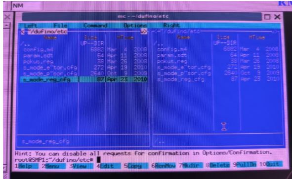
5. Cari baris-baris konfigurasi lama berikut:
9 20 yes no
10 20 yes no
17 20 yes no
20 20 yes no
21 30 yes no
51 6 yes no
52 6 yes no
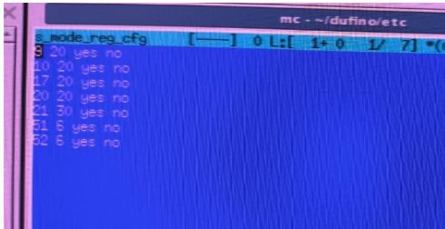
6. Ubah isi file tersebut sesuai dengan rekomendasi versi terbaru dari expert Eldis
(Gunakan panduan: angka 1 = yes, angka 0 = no):40 8 1 0
10 120 1 0
17 120 1 0
20 120 1 0
50 8 1 0
51 20 1 1
60 8 1 0
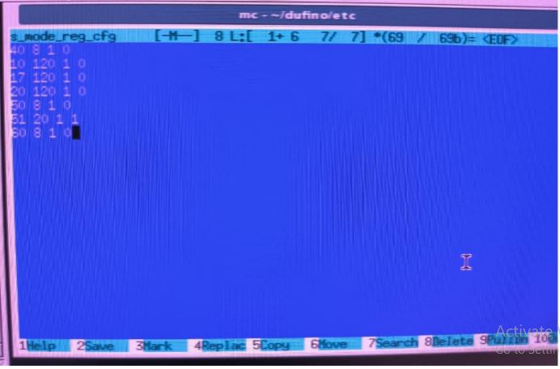
7. Simpan perubahan dengan menekan tombol F2, lalu tekan tombol F10 untuk keluar dari editor MC dan kembali ke terminal.
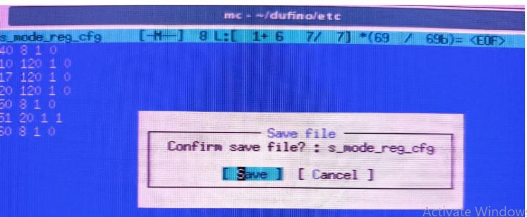
Langkah 3: Reboot dan Verifikasi
1. Lakukan reboot pada perangkat smp1 setelah selesai menyimpan file konfigurasi dengan mengetik perintah:
reboot
2. Setelah proses restart selesai, periksa kembali sistem untuk memastikan BDS List 40 60 sudah tersedia data informasi serta nilainya (*Information and Value*).
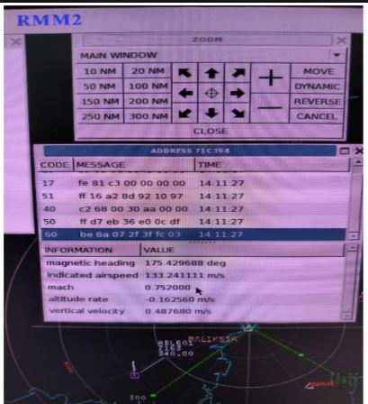
3. Lakukan verifikasi akhir pada layar SDD New ATMAS INDRA untuk memastikan Extended Label sudah muncul dan aktif.
MERK ADSB
SUB-FACILITY: ATMAS (ATC SYSTEM)
SOP FASILITAS: ATMAS INDRA
MERK AMSC
SOP: PAE T6 - UPLOAD dan DOWNLOAD KONFIGURASI MENGGUNAKAN VFP
A. PERSIAPAN PERANGKAT
1. Siapkan laptop maintenance yang sudah terinstal software VFP (Virtual Front Panel) resmi dari Park Air Electronics.
2. Siapkan kabel VFP (Virtual Front Panel)
3. Siapkan USB to Serial (ATEN)
B. LANGKAH DOWNLOAD KONFIGURASI
1. Hubungkan kabel VFP melalui port Michrophone atau Headset Radio dan connectkan ke laptop menggunakan USB to Serial (ATEN).
2. Periksa COM Port Detect di Laptop di Menu Device Manager(Contoh:COM1).
3. Buka software VFP pada laptop, lalu pada menu Serial Port pilih COM1.
4. Masuk menu Radio -> Retrieve -> All , maka akan tampak seperti gambar di bawah

5. Untuk menyimpan File File -> Save -> All .

6. Simpan file sesuai nama yang diinginkan Misal (118.1 MHz,txt).
C. LANGKAH UPLOAD KONFIGURASI
1. Hubungkan kabel VFP melalui port Michrophone or Headset Radio dan connectkan ke laptop menggunakan USB to Serial (ATEN).
2. Periksa COM Port Detect di Laptop di Menu Device Manager(Contoh:COM1).
3. Buka software VFP pada laptop, lalu pada menu Serial Port pilih COM1.
4. Masuk ke File -> Open -> Settings
5. Buka file konfigurasi yang sudah tersimpan, Misal (118.1 Mhz.txt)
6. Klik Radio -> Send -> Settings.

7. Setelah Upload lakukan Restart Radio.
SOP: PAE T6 - CARA SETTINGS IP RADIO
A. PENGATURAN PADA RADIO PAE T6
1. Masuk ke Settings masukkan IP Address 10.10.6.2, Subnet Mask 255.255.255.224, Gateway 10.10.6.1.
2. Subnet Mask 255.255.255.224 merupakan CIDR /27 sehingga memiliki alokasi IP Address dari 10.10.6.1 s/d 10.10.6.32.
B. KONEKSI JARINGAN
1. Hubungkan kabel LAN melalui port IP Radio PAE T6 menggunakan kabel strike ke laptop.
2. Ubah IP Address laptop menjadi satu subnet dengan IP radio yang masuk dalam alokai (Contoh : 10.10.6.30).
3. Ping IP radio dari laptop melalui CMD, jika ping reply maka settings IP sudah selesai.
SOP: PAE SAPPHIRE - CONNECT RADIO TO S4
KONFIGURASI IP KE S4
1. Buka web browser (Google Chrome/Edge) lalu ketik IP address default atau IP address aktif perangkat.
2. Masuk (Login) menggunakan akun teknisi/administrator yang sah.
3. Navigasikan ke menu Network Settings -> IP Configuration.
4. Ubah parameter IP Address, Subnet Mask, dan Default Gateway sesuai dengan tabel alokasi IP lokal bandara/CNSD.
5. Klik tombol Apply / Save Settings.
6. Lakukan uji coba koneksi (Ping) menggunakan IP address baru untuk memastikan konfigurasi telah berhasil diaplikasikan.
SOP: ATMAS INDRA - MOUNT USB (COPY/BACKUP DATA)
A. DESKRIPSI
SOP ini dilakukan untuk melakukan penyalinan (copy) file data dari sistem ATMAS ke media USB flashdisk maupun sebaliknya untuk keperluan maintenance/investigasi.
B. LANGKAH-LANGKAH MOUNT USB
1. Colokkan USB flashdisk ke port USB pada PC Master/Maintenance ATMAS.
2. Buka terminal sistem operasi dengan menekan kombinasi tombol (Alt + F5).
3. Ketik perintah sudo fdisk -l untuk melihat daftar penyimpanan yang terdeteksi. Perhatikan lokasi flashdisk, umumnya berada di /dev/sdb atau /dev/sdc.
4. Buat koneksi direktori dengan mengetik perintah: mount /dev/sdb /mnt.
5. Lakukan penyalinan file ke dalam folder tujuan di /mnt.
6. Jika proses salin selesai, lepaskan koneksi flashdisk dengan mengetik: umount /dev/sdb atau /dev/sdc.
7. Cabut USB flashdisk dengan aman dari PC ATMAS.
SOP: ATMAS INDRA - PROSEDUR START AND STOP APPLICATION ATMAS
A. Prosedur Start Subsystem via CMD
1. Login ke CMD (Controller Maintenance Display) menggunakan perintah berikut:
- User : STO / SUT
- Password : STO / SUT
2. Pilih Subsystem yang akan dijalankan.
3. Klik kanan pada Subsystem, kemudian pilih Start Subsystem.
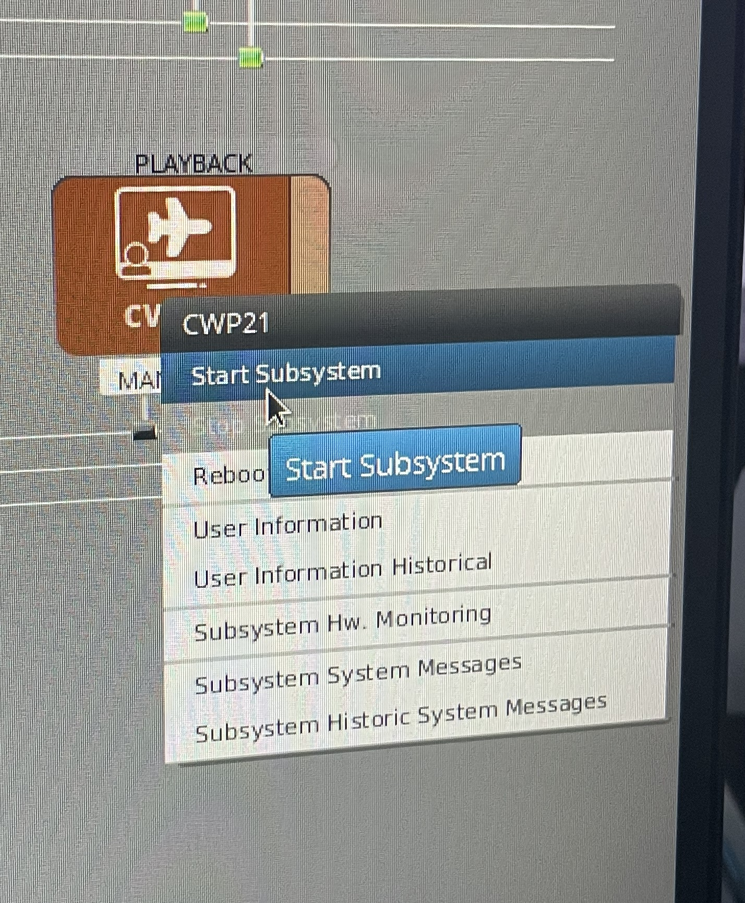
START APPLICATION
4. Tunggu hingga status Subsystem berubah menjadi Green, yang menandakan sistem telah beroperasi normal.
B. Prosedur Start Subsystem via SSH
1. Buka Terminal untuk melakukan Remote SSH ke aplikasi yang akan dijalankan.
2. Login ke CWP yang akan diaktifkan. Contoh:
# ssh cwp213. Setelah berhasil masuk ke cwp21, jalankan aplikasi dengan perintah:
# istart4. Pastikan direktori aktif berada pada lokasi berikut:
/local/balikpapan/icwp/exec/runtime5. Tunggu pada tampilan CMD berubah menjadi hijau
C. Prosedur Stop Subsystem via CMD
1. Login ke CMD (Controller Maintenance Display) menggunakan perintah berikut:
- User : STO / SUT
- Password : STO / SUT
2. Pilih Subsystem yang akan dimatikan STOP.
3. Klik kanan pada Subsystem, kemudian pilih Stop Subsystem.
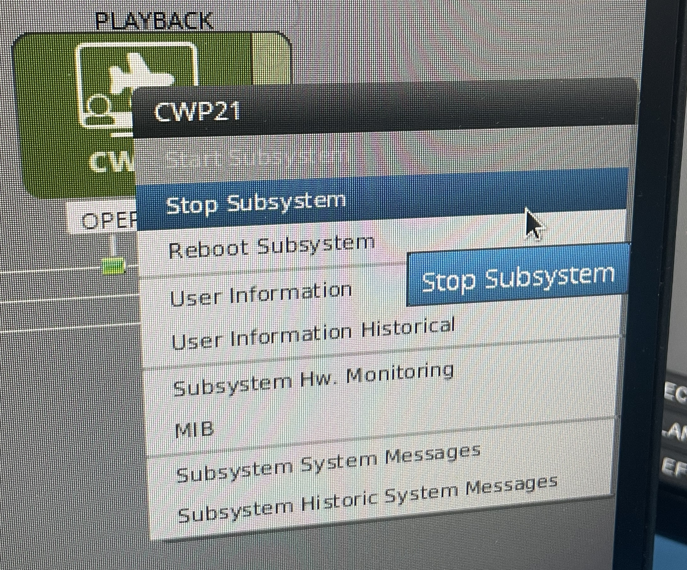
STOP APPLICATION
4. Tunggu hingga status Subsystem berubah menjadi Merah, yang menandakan aplikasi dalam keadaan off.
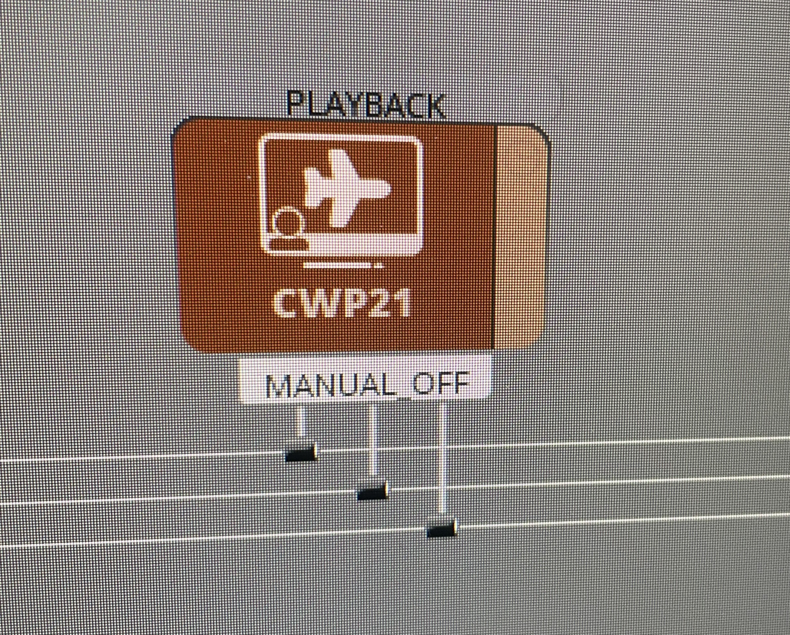
APPLICATION TELAH BERHENTI
D. Prosedur Stop Subsystem via SSH
1. Buka Terminal untuk melakukan Remote SSH ke aplikasi yang akan dijalankan.
2. Login ke CWP yang akan diaktifkan. Contoh:
# ssh cwp213. Setelah berhasil masuk ke cwp21, jalankan aplikasi dengan perintah:
# istop4. Pastikan direktori aktif berada pada lokasi berikut:
/local/balikpapan/icwp/exec/runtime5. Tunggu pada tampilan CMD berubah menjadi merah
SOP: ATMAS INDRA - PROSEDUR SECTORIZATION CWP ATMAS
1. Login CMD (Controller Maintenance Display)
- User : STO / SUO
- Password : STO / SUO
2. Pada Main Menu, pilih menu Sectorization.
3. Klik menu Current Sectorization hingga muncul jendela Current Sector Configuration.
4. Pastikan ICWP Workstation yang dituju telah login and ikon Lock dalam kondisi terbuka (Unlock).
5. Klik dan tahan (drag and drop) sector pada daftar ICWP asal, kemudian pindahkan ke daftar ICWP tujuan.
6. Alternatif lain, pada ICWP asal klik Frequency lalu pilih FREE, kemudian klik OpsSector dan pilih FREE.
7. Klik OK, kemudian pada jendela Confirmation klik OK kembali.
8. Lakukan restart CMD. Pastikan seluruh CWP dalam satu Sectorization telah login and ikon Lock dalam kondisi Unlock.
9. Setelah proses Sectorization ICWP selesai, laporkan kegiatan kepada ATS Operator and lakukan pencatatan pada Logbook Pemeliharaan.
SOP: ATMAS INDRA - SWITCH OVER SERVER
Prosedur Switchover Server
1. Pastikan jaringan LAN beroperasi dengan normal.
2. Pastikan data Surveillance dan data Flight berfungsi dengan normal.
3. Informasikan kepada ATS Operator mengenai perkiraan waktu pelaksanaan Switchover Server.
4. Login ke CMD (Controller Maintenance Display) menggunakan perintah berikut:
- User : STO / SUO
- Password : STO / SUO
5. Pilih dan klik tombol Server yang akan dilakukan Switchover.
6. Klik kanan pada Server A atau Server B yang akan dilakukan Switchover. Sistem akan menampilkan beberapa pilihan kontrol:
- Start Subsystem
- Stop Subsystem
- Reboot Subsystem
- Switchover
7. Pilih menu Switchover. Sistem akan menampilkan jendela Confirmation untuk mengonfirmasi tindakan.
8. Klik OK untuk menjalankan proses Switchover, atau klik Cancel untuk membatalkan proses.
9. Setelah proses Switchover Server selesai, pastikan server aktif beroperasi dengan normal.
10. Laporkan pelaksanaan kegiatan kepada ATS Operator dan lakukan pencatatan pada Logbook Pemeliharaan.
SOP: ATMAS INDRA - GLOBAL RESTART ATMAS
Prosedur Global Restart
1. Sebelum melaksanakan Global Restart, lakukan Backup Flight Plan (FPL) pada FDP 1 dan FDP 2.
2. Buka Terminal dengan menekan Alt + F5.
3. Login ke salah satu FDP menggunakan perintah:
# ssh fdp14. Pastikan direktori aktif berada pada:
/local/balikpapan/fdp/exec/runtime
5. Jalankan perintah untuk menyimpan Flight Plan (FPL):
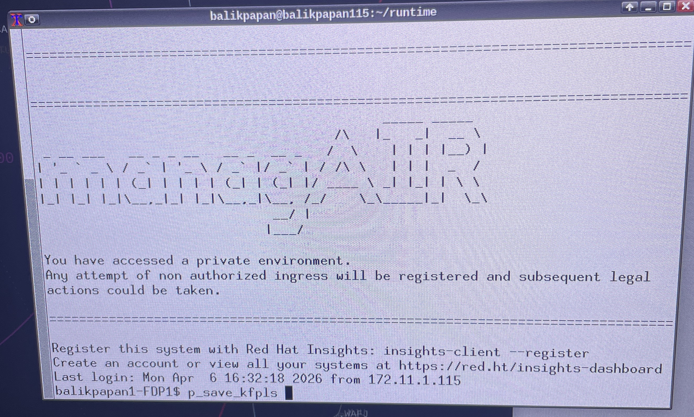
# p_save_kfpls
6. Tunggu hingga proses penyimpanan FPL selesai.

7. Lakukan proses Backup FPL yang sama pada FDP 2.
8. Jika telah selesai Backup FPL pada FDP 2, Lakukan Global Restart melalui CMD dengan langkah berikut:
- Pilih menu Control.
- Pilih System Stop.
- Masukkan STO sebagai konfirmasi tindakan.
- Tunggu hingga tampilan CMD mati (off).
9. Saat layar CMD kosong (Blank Screen), tekan ENTER and login menggunakan:
User : balikpapanPassword : balikpapan
10. Setelah berhasil login, hidupkan FDP terlebih dahulu menggunakan mode Warm.
- Klik Subsystem FDP 1 atau FDP 2.
- Klik kanan dan pilih Start Subsystem.
- Pilih mode Warm.
- Tunggu hingga status Green sebagai Operational dan Amber sebagai Standby.
- Pastikan seluruh External Link (UCA dan VCA) berstatus Green.
11. Selanjutnya lakukan System Start melalui menu:
- Pilih Control.
- Pilih System Start.
- Masukkan STO sebagai konfirmasi tindakan.
12. Apabila terdapat System atau Subsystem yang tidak aktif atau mengalami anomali:
- Pilih System atau Subsystem yang bermasalah.
- Pilih Reboot.
- Tunggu hingga seluruh Subsystem berstatus Green.
13. Proses Global Restart telah selesai.
Catatan: Jika Global Restart dijalankan menggunakan mode Cold, maka seluruh Flight Plan (FPL) akan hilang.
14. Untuk mengembalikan Flight Plan (FPL), lakukan langkah berikut:
15. Login ke salah satu FDP menggunakan perintah:
# ssh fdp1 atau ssh fdp2
16. Masuk ke direktori:
/local/balikpapan/fdp/exec/runtime
17. Jalankan perintah untuk mengembalikan FPL:
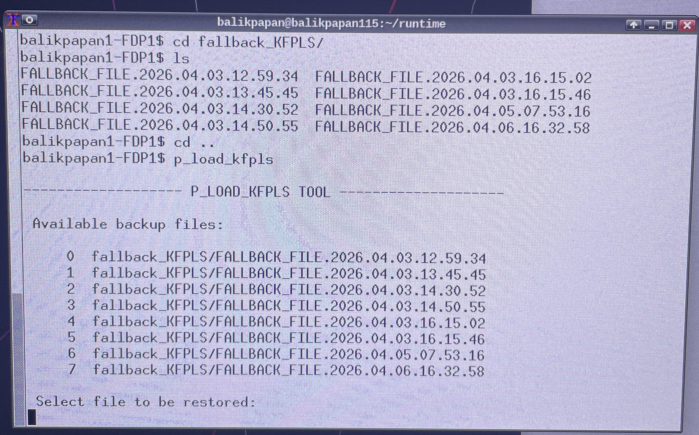
# p_load_kfpls
18. File backup FPL berada pada direktori:
/local/balikpapan/fdp/exec/runtime/fallback_KFPL
19. Pilih nomor backup terakhir pada menu Select Number to be Restore.
20. Setelah proses Restore selesai, seluruh Flight Plan (FPL) akan muncul kembali.
SOP: ATMAS INDRA - REMOTE TOOLBOX AND DBM
A. Remote Toolbox
1. Pastikan Jaringan LAN beroperasi normal
2. Open Terminal (Alt+F5)
3. Ketik command
#ssh dbm -l root -X#cd /toolbox /CONFIG#./TOOLBOX.exe4. Akan muncul tampilan aplikasi TOOLBOX pada display
B. Remote DBM
1. Pastikan Jaringan LAN beroperasi normal
2. Open Terminal (Alt+F5)
3. Ketik command
#ssh dbm -l postgres -X#cd /local/balikpapan/adap/exec/tcl_tk#./dbsman.tclAtau Setelah perintah #ssh dbm -l postgres -X ketik istart
4. Akan muncul tampilan aplikasi DBM pada display
SOP: ATMAS INDRA - PLAYBACK ATMAS
A. Prosedur Video Playback Recorder CWP Display ATMAS
1. Login ke CMD (Controller Maintenance Display) menggunakan perintah berikut:
- User : STO / SUO
- Password : STO / SUO
2. Matikan CWP 21 (Playback) untuk masuk ke Mode Playback. Sistem akan menampilkan beberapa pilihan kontrol:
- Pada CMD klik Subsystem CWP
- Klik Kanan di CWP 21
- Stop System
- Maka CWP 21 akan berwarna merah dengan status Manual OFF
- Klik Kanan Start System
- Maka ada Pilihan Operasional dan Playback
- Pilih Playback
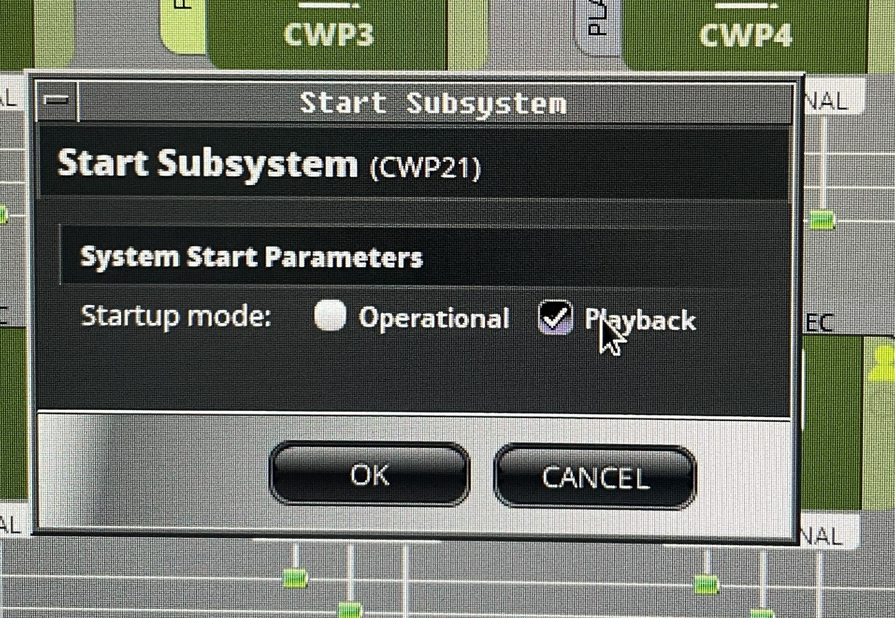
PILIHAN OPERASIONAL MODE DAN PLAYBACK MODE- Tunggu sampai CWP 21 berubah menjadi Biru (Mode Playback) di CMD
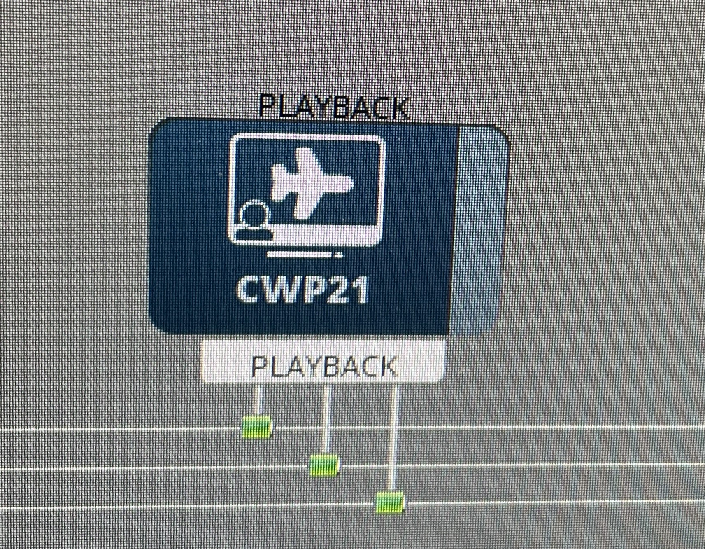
PLAYBACK MODE3. Pada CWP 21 akan berubah menjadi PBK-CWP 21.
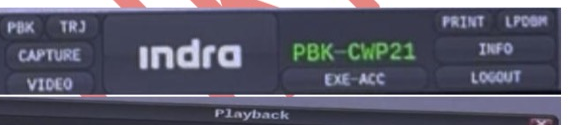
PBK-CWP 214. Klik PBK atau F4 untuk membuka menu Playback.
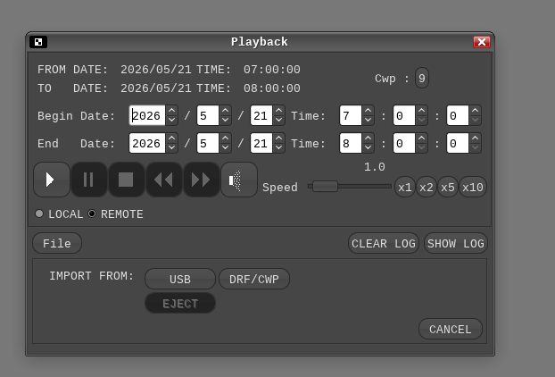
PBK-CWP 215. Klik icon speaker sekali untuk membuka button LOCAL dan REMOTE (akan ada log VRP disable)
- Tombol LOCAL digunakan untuk playback local di CWP21
- Tombol REMOTE digunakan untuk playback remote CWP lain
6. Import File sesuai dengan waktu yang diinginkan.
- Klik File kemudian Import
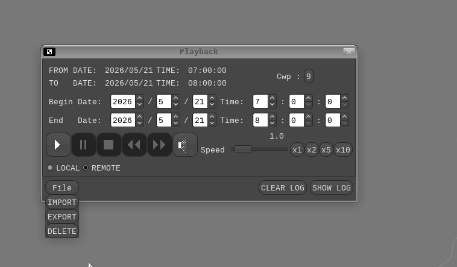
IMPORT FILE- Pilih DRF / CWP
- Button DRF/CWP mengambil file .Z langsung menggunakan jaringan interkoneksi ATMAS
- Button USB mengambil rekaman .Z Manual dari CWP atau DRF menggunakan USB
7. Akan muncul Menu untuk mengambil file .Z
- Pilih CWP atau DRF kemudian Pilih DATA
- DRF = Remote Copy (90 Hari)
- CWP = Current Copy (30 Hari)
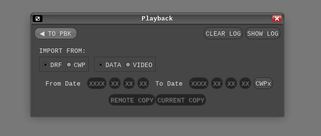
IMPORT CWP OR DRF8. Pilih CWP yang akan diambil file .Z
- Tunggu beberapa saat setelah memilih CWP, sampai angka CWPx berubah menjadi CWP yang diremote
- Atur From Date dan To Date dengan format:
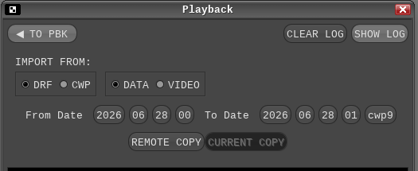
Tahun, Bulan, Hari dan Jam (File .Z) merupakan file rekaman yang menyimpan per jam- Klik Remote Copy atau Current Copy
- Tunggu sampai import file.Z status COPIED FROM OK
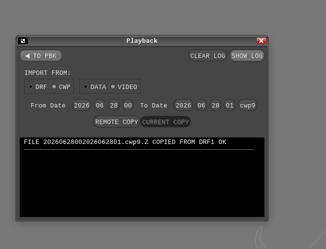
9. Klik Button TO PBK
10. Klik Button REMOTE untuk playback CWP lain di CWP21, akan muncul di kanan atas pilihan cwp yang akan diremote
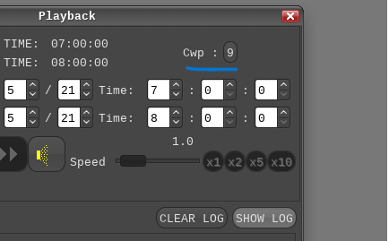
11. Tentukan Waktu Playback:
- Begin Date dengan format Tahun, Bulan, Hari, Jam, Menit dan Detik
- End Date dengan format Tahun, Bulan, Hari, Jam, Menit dan Detik
12. Klik button Speaker 1 kali sampai berubah menjadi kuning dan muncul log “VRP SYNCHRONIZED ENABLE”
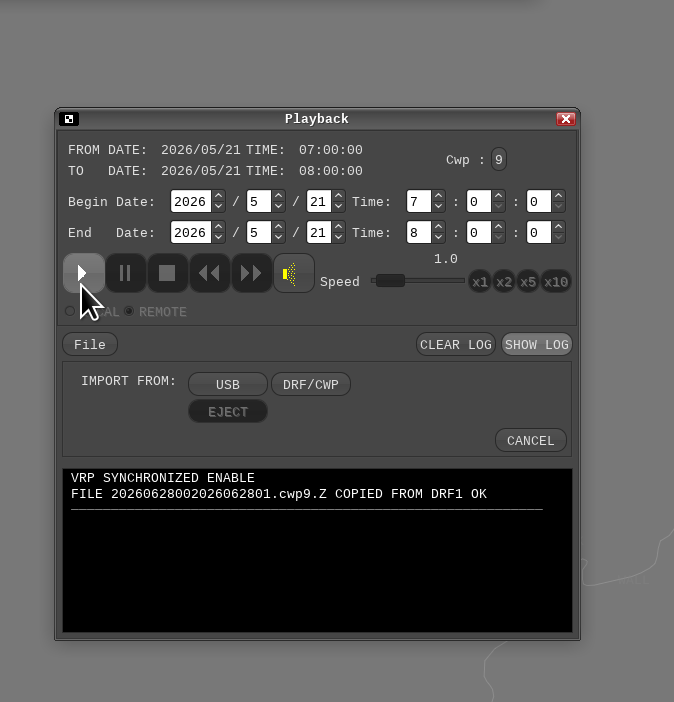
13. Klik button Play
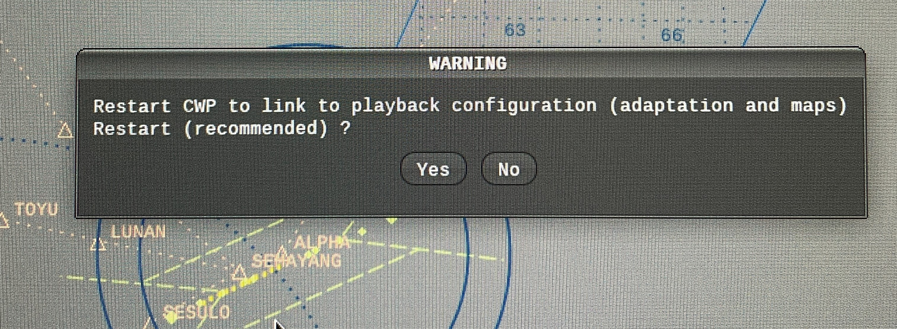
- Jika muncul notifikasi “Restart CWP to link Playback” Klik Yes saja
14. Tunggu sampai CWP yang diremote berubah menjadi kuning
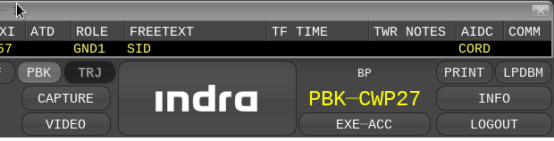
- Jika Playback berhasil maka waktu/time di cwp akan berjalan disebelah kanan atas dan log akan menampilkan “Merge Audio successfully”
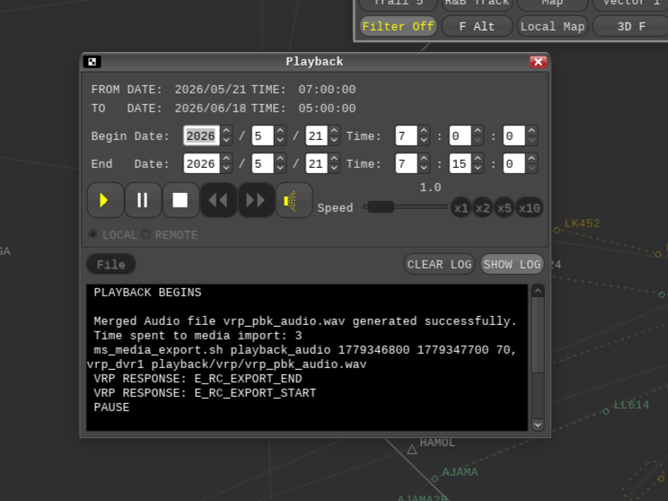
- Jika Playback gagal maka akan muncul notifikasi “VRP RESPONSE TIMEOUT”, maka otomatis playback akan berhenti
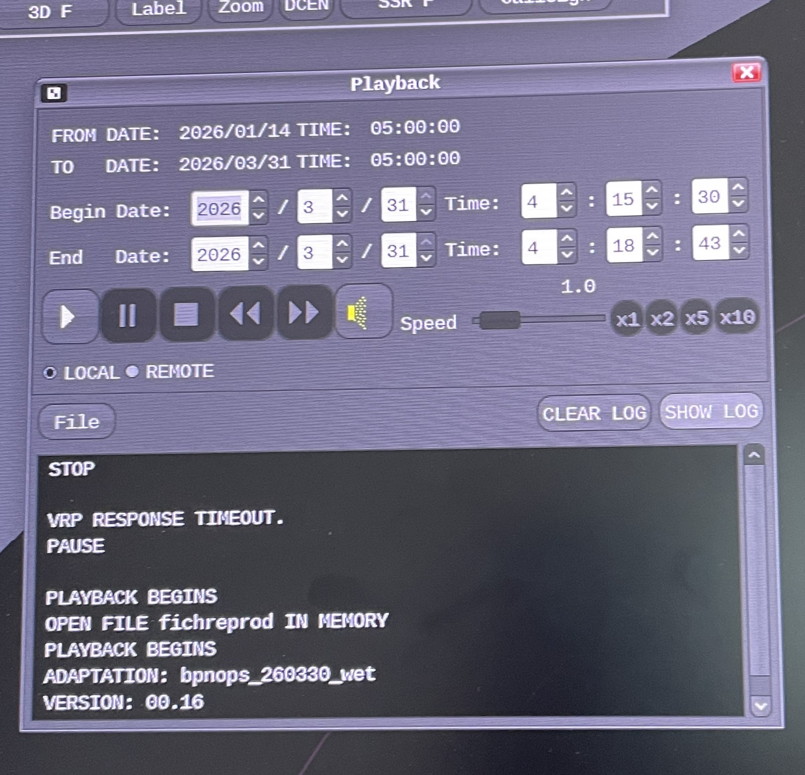
15. Jika Playback berhasil audio dan video combine maka, Tekan F4 untuk memunculkan kembali Menu Playback
16. Klik button “STOP” untuk menghentikan playback
17. Untuk Memulai Screen Record dengan playback yang sudah berhasil, maka Tekan Button “VIDEO” untuk memulai Screen Record CWP
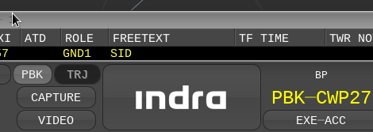
18. Tekan kembali button “PLAY” untuk menjalankan Playback, Tunggu sampai waktu yang dibutuhkan record screen tercapai.
19. Klik button “VIDEO” lagi untuk menghentikan screen record. Atau tunggu sampai waktu selesai, maka otomatis screen record akan berhenti secara otomatis.
20. File screen record berada di directory: /local/balikpapan/fdp/exec/runtime/captures/ dengan extention .mkv
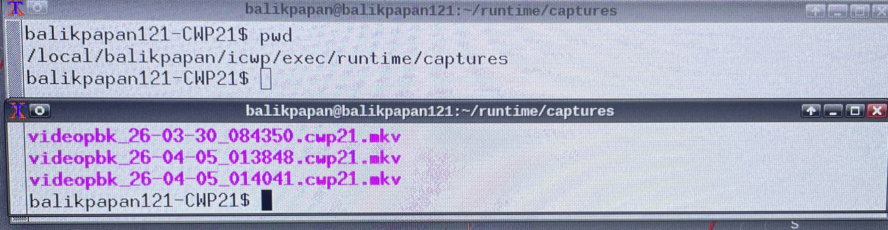
Untuk menjalankan file .mkv maka ketik:
mplayer (name_file).mkvatau/local/balikpapan/icwp/exec/playback/vrp
21. File audio berada di 2 directory
/local/balikpapan/icwp/exec/runtime/playback/vrp/local/balikpapan/icwp/exec/playback/vrp22. Dengan nama vrp_pbk_audio.wav
23. Untuk menjalankan file .mkv maka ketik:
aplay vrp_pbk_audio.wav24. Konfigurasi Channel playback yang terkoneksi dengan Recorder Neptuno ada di direktori
#local/balikpapan/icwp/exec/runtime/25. Ketik command berikut untuk melihat konfigurasi:
#more ICWP_ADM_VRP_CFG26. Untuk mengatur volume, buka terminal ketik
#alsamixerB. Menggabungkan File Audio dan Video
1. Pindahkan kedua file audio dan video diatas menjadi 1 folder. Contoh di folder /HASILRECORD.
2. Masuk ke folder dengan akses root (sudo -i)
cd /local/balikpapan/icwp/exec/runtime/playback/vrpcd /local/balikpapan/icwp/exec/playback/vrp3. Copy file
cp -r vrp_pbk_audio.wav /HASILRECORD4. Masuk ke folder dengan akses root (sudo -i)
cd /local/balikpapan/icwp/exec/runtime/captures/5. Copy file
cp -r nama_file.mkv /HASILRECORD6. Buka folder /HASILRECORD, maka akan muncul 2 file nama_file.mkv dan vrp_pbk_audio.wav.
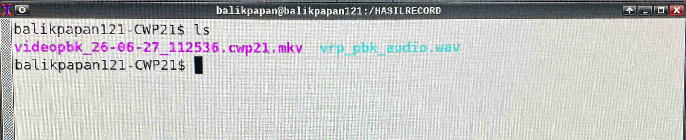
7. Jalankan command dibawah untuk menggabungkan file video dan audio.
ffmpeg -i nama_file.mkv -i vrp_pbk_audio.wav -c copy play.mkvCatatan: play.mkv merupakan nama file hasil output dan dapat diganti sesuai kebutuhan.
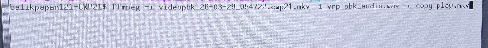
8. Tunggu proses combine file audio dan video
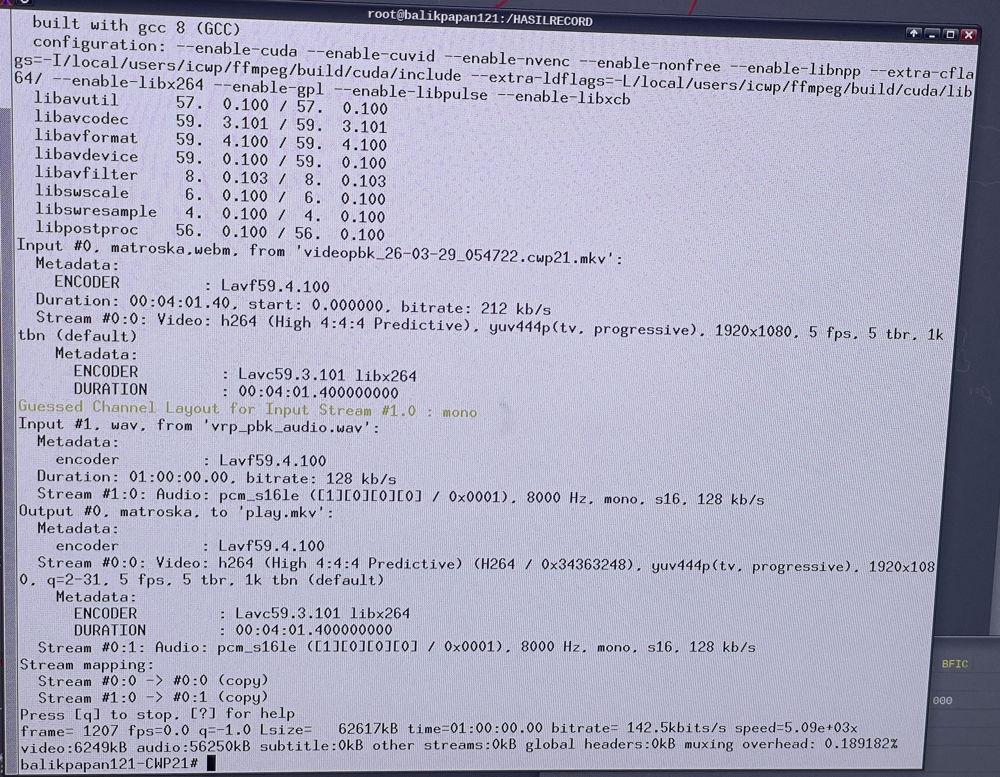
9. Pastikan file combine audio dan video sudah ada
C. Memutar Playback di Device Lain
1. Masukkan Disk pada PC CWP 21 untuk mengambil rekaman.
2. Buka terminal (Alt + F5).
3. Masuk ke akses root (sudo -i).
4. Jalankan command dibawah untuk melihat device (biasanya dengan nama sdb, sdc, sde, atau sdf).
fdisk -l5. Mount disk.
mount /dev/sdb1 /mnt6. Buka folder /mnt dan pastikan isinya sudah merupakan disk yang sudah dimasukkan.
7. Masuk ke folder /HASILRECORD dan pastikan terdapat file play.mkv.
8. Copy file play.mkv.
cp -r play.mkv /mnt9. Masuk kembali ke folder /mnt dan pastikan file play.mkv sudah tercopy.
10. Keluar folder dan jalankan command dibawah untuk mengeluarkan disk.
umount /dev/sdb111. Masukkan disk ke device ekternal jalankan file play.mkv dengan aplikasi VLC, GNOME, MPLAYER untuk memutar rekaman playback.
SOP: ATMAS INDRA - EXPORT DIRECT PLAYBACK TO USB
Export Record File to USB Disk
1. Plug USB Disk.
2. Login ke CMD dengan,
- User : STO / SUT
- Password : STO / SUT
3. Sebelum memulai proses export file, ICWP non-sectorised (ICWP Playback) harus distop/dihentikan melalui CMD.
4. Setelah dihentikan (Manual OFF-Mode), ICWP non-sectorised harus dijalankan kembali dalam mode Playback dengan cara pilih/klik "startup mode: playback" pada CMD. Kemudian klik OK.
5. Klik "PBK" button untuk menampilkan jendela kontrol playback CWP.
6. Klik "File" button.
7. Pilih dan Klik "EXPORT".
8. Terdapat beberapa pilihan data rekaman yang dapat di export, antara lain:
a. Local, yaitu untuk menampilkan dan export data rekaman yang terdapat pada CWP local.
b. Remote, yaitu untuk menampilkan dan export data rekaman yang terdapat pada DRF, CWP dan USB yang sebelumnya telah di Load terlebih dahulu.
c. Capture, yaitu untuk menampilkan dan export data screen capture SDD (PNG) yang dioperasikan dalam playback mode.
d. Video, yaitu untuk menampilkan dan export data rekaman dalam bentuk video recording (mkv) yang dioperasikan dalam playback mode.
9. Pilih file yang diinginkan, kemudian Klik "OK".
10. Pada area log, akan muncul pesan "Nama File" Copied To Stick OK yang berarti proses export file to USB Disk berhasil dilakukan.
11. Unplug USB Disk.
12. Setelah melakukan kegiatan, lakukan pencatatan pada Logbook.
SOP: ATMAS INDRA - DISPLAY CONFIGURATION
A. DISPLAY CONFIGURATION
1. Buka terminal Alt + F5
2. Masukan perintah nvidia-settings
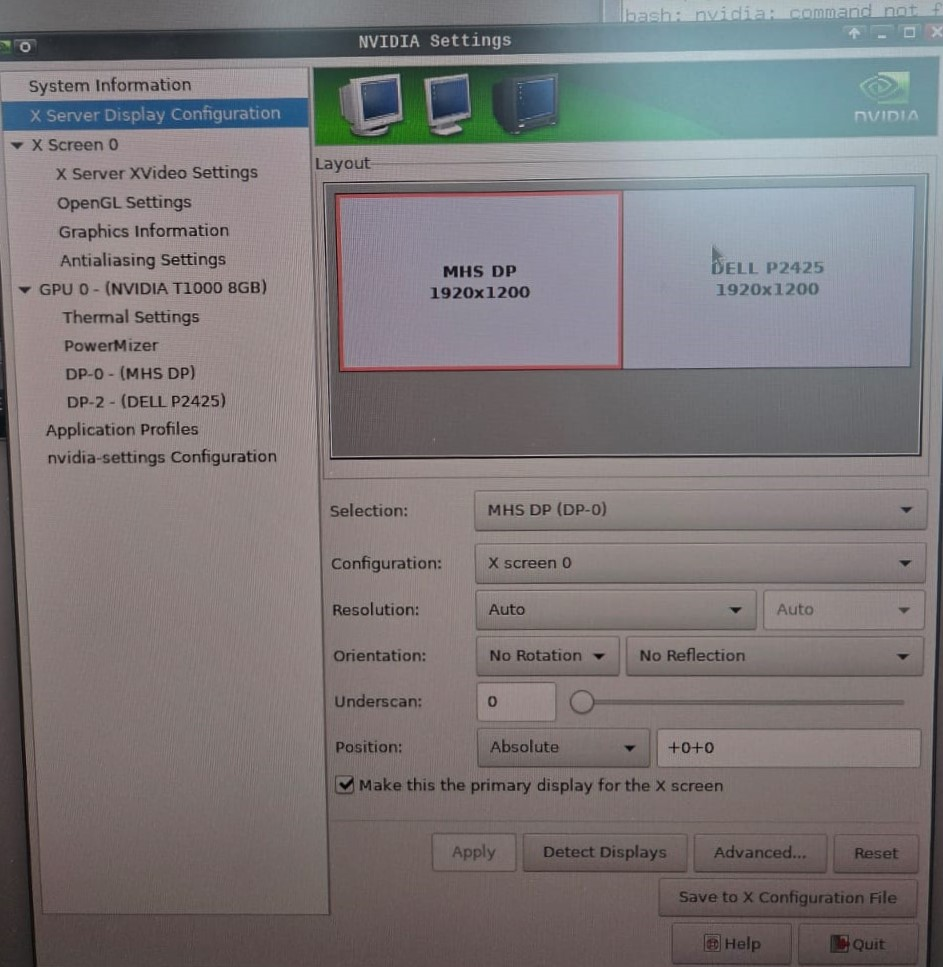
Tampilan monitor 24” Dual Screen Monitor menggunakan 1 PC CWP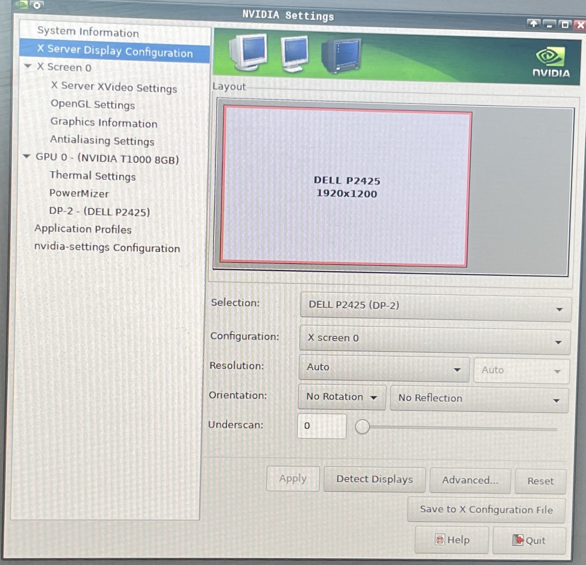
Tampilan monitor 24” Single Screen Monitor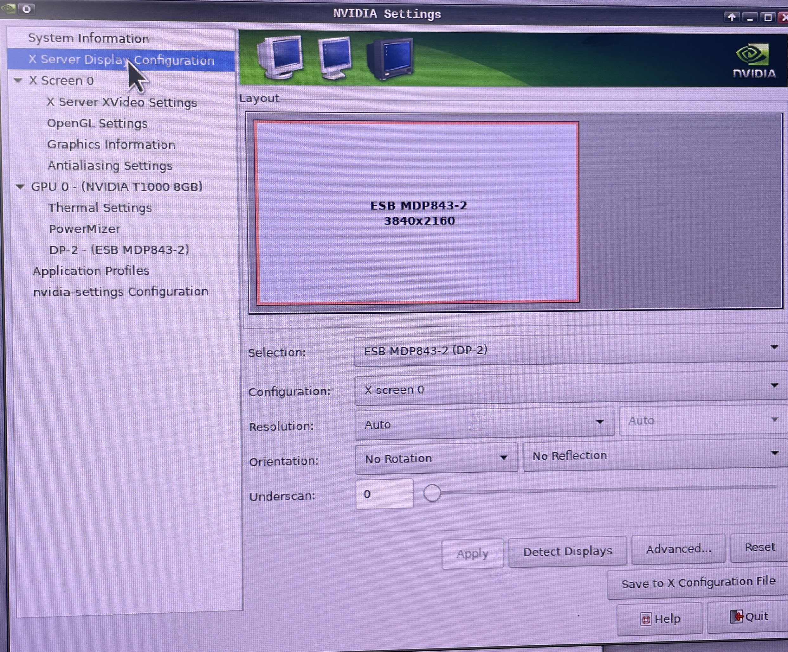
Tampilan monitor 4Kx2K3. Pilih X Server Display Configuration.
4. Adjust screens resolution dan adjust screens position, sesuai keinginan.
5. Checklist pada make this the primary display for the screen.
6. Klik Apply.
7. Klik Save to X Configuration File.
8. Penting untuk menghapus 2 DISPLAY INFO.CFG (atau setting default) agar setting terbaru dapat di launch.
9. Untuk menemukan 2 DISPLAY INFO.CFG dapat menggunakan command berikut:
#find /local/balikpapan/ -name ICWP_ADM_DISPLAY_INFO.CFG10. Untuk menghapus display info.CFG, gunakan command berikut:
#rm /local/balikpapan/icwp/exec/runtime/ICWP_ADM_DISPLAY_INFO.CFG#rm /local/balikpapan/fdd/exec/runtime/ICWP_ADM_DISPLAY_INFO.CFG11. Edit script /local/balikpapan/icwp/exec/runtime.
#vi ICWP_ADM_DISPLAY_INFO.CFGIkuti resolution mapping berikut:
| Monitor Size | Resolution |
|---|---|
| 20" | 1280x1024 |
| 21" | 1600x1200 |
| 22" | 1680x1050 |
| 24" | 1920x1200 |
| 28" | 2048x2048 |
| 30" | 2560x1600 |
Contoh:
vi /local/balikpapan/icwp/exec/runtime/ICWP_ADM_DISPLAY_INFO.CFGUntuk mengubah tampilan monitor ke 21",
Data.display.x:0Data.display.y:0Data.display.width:1600Data.display.height:1200Tekan: Esc
Ketik: :wq (Keluar dari editing script).
Hapus xorg.conf file di /etc/X11 directory.
12. istop dan istart maka display akan berubah sesuai settingan
SOP: ATMAS INDRA - CREATE AND MODIFY USER PASSWORD
Pembuatan User dan Password DBM
1. Login DBM dengan User: DBM dan Password: DBM.
2. Pilih Adaptation.
3. Pada menu system configuration, pilih:
- Subsystem Configuration
- User Passwords
4. Pada jendela USER PASSWORDS terdapat beberapa menu, antara lain:
- a.
Exit (ESC), untuk keluar dari jendelaUSER PASSWORDS. - b.
Report (F4), untuk mengekspor file user dan passwords. - c.
Rename (F6), untuk mengubah nama user dan passwords. - d.
Delete (F8), untuk menghapus user dan passwords yang sudah ada. - e.
Create (F9), untuk menambahkan user dan password baru.
5. Klik menu Create (F9), kemudian isi data user dan password yang diinginkan:
- a. User, beriisikan nama user dan maksimal 8 karakter.
- b. Password, berisikan password yang diinginkan dan maksimal 8 karakter.
- c. Confirm Password, berisikan password yang sama untuk konfirmasi.
- d. Alias, berisikan nama yang akan tampil pada CWP atau subsystem dan maksimal 30 karakter.
- e. Role, berisikan list rol fungsinya sebagai apa, misalnya:
- Controller
- Assistant
- Tech.Supervisor
- Oper.Supervisor
- Tech.Oper.Supervisor
6. Klik Create untuk menyimpan settingan.
7. Kembali ke Jendela Adaptation, pilih menu data distribution kemudian pilih dan klik Load Adaptation Data.
8. Pada Jendela Load Adaptation pilih/centang Operational, kemudian pilih Load ke hostnamenya (dapat memilih 1 hostname atau semua hostname).
9. Klik OK.
10. Stop and Start Aplikasi.
11. Setelah melakukan kegiatan, lakukan pencatatan pada Logbook.
SOP: ATMAS INDRA - LOGIN IN CMD & SETTINGS USER DBM ATMAS
A. Login ke CMD
Login ke CMD dengan,
1. SUO : Operational User Supervision
- User :
SUO - Password :
SUO
Bisa mengatur beberapa menu di CMD seperti Sectorization tetapi tidak bisa start dan stop aplikasi (disable function)
2. SUT : Technical User Supervisor
- User :
SUT - Password :
SUT
Bisa melakukan start dan stop subsystem di CMD tetapi tidak bisa melakukan Sectorization
3. STO : Operational Technical Supervisor
- User :
STO - Password :
STO
Digunakan untuk akses seluruh system (Konfigurasi dan Kontrol)
B. Membuat User CMD
User yang digunakan untuk login pada ATM Automation selain DBM dan Toolbox
Pada PC DBM tampilan awal hanya tulisan balikpapan dan ketika di klik hanya beberapa sub-menu DBM yang terbuka, untuk memunculkan menu DBM dan TOOLBOX
1. Klik balikpapan » Maintenance » Masukkan password indraroot
2. Maka akan muncul seluruh sub-menu DBM
Klik DBM
- Username : DBM
- Password : DBM
3. Masuk pada Database Selection :
- Pilih Database Selection yang digunakan
Contoh : bpnops
- Klik Subsystem Configuration
- Klik Databases Manipulations
- Klik Users Password
4. Membuat User dan Password
Klik Create, dan Masukkan
a. User = Diisi Nama User
b. Password = Diisi Password User
c. Confirm Password = Ketik ulang Password User
d. Alias = Diisi terserah saja
Pilih Role yang diinginkan yaitu :
- STO = Operasional Technical Supervisor
- SUT = Technical User Supervisor
- SUO = Operasional User Supervisor
- CON = Controller
- ASS = Assistant
5. Setelah selesai Klik Create/Modify
6. Kembali ke MENU UTAMA DBM, pilih Generate All Data Files » Klik Start
7. Kemudian Klik Load Adaptation Data » Checklist Operational & Maps » Pilih Hostname yang akan di load / seluruhnya
8. Stop dan Start kembali aplikasi pada CMD
SOP: ATMAS INDRA - REMOTE MENGGUNAKAN VNCVIEWER ATMAS
A. Remote WS Lain
1. Open Terminal (Alt+F5)
2. Pilih Workstation apa yang mau diremote menggunakan vncviewer
- Ketik command
#ssh cmd1 - Jalankan aplikasi
vncviewerdengan command :#/usr/bin/x11vnc - tekan
Enter
Contoh : cmd1
Atau langsung saja
#x11vncTunggu sampai terdapat tulisan
1 2 3 4
3. Open Terminal lagi (ALT + F5) dan ketik
#vncviewer cmd14. Akan muncul tampilan aplikasi CMD1
B. Remote WS Lain/Server dengan Graphic View Yang Lebih Bagus
1. Pilih Workstation apa yang mau diremote menggunakan vncviewer
Contoh : drf1
2. Open Terminal (Alt+F5)
Jalankan aplikasi
vncviewerdengan command :#x11vnc --scale 1.20 --display :0.0Tunggu sampai terdapat tulisan
1 2 3 4
3. Open Terminal lagi (ALT + F5) dan ketik :
#vncviewer drf1Akan muncul tampilan aplikasi DRF1
C. Remote WS Lain dengan Button Bisa Klik
1. Open Terminal (Alt+F5)
2. Pilih Workstation apa yang mau diremote menggunakan vncviewer
Contoh : cwp1
3. Ketik command
#ssh cwp14. Jalankan aplikasi vncviewer dengan command :
#/x11vnctekan Enter
- Tunggu sampai terdapat tulisan
The VNC desktop is: balikpapan101:1 - The VNC desktop
balikpapan101:1bisa berubah-ubah sesuai dengan cwp.
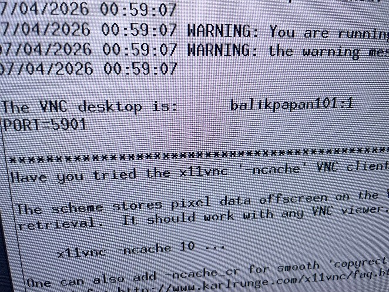
5. Buka kembali terminal baru (Alt + F5)
6. Ketik
vncviewer cwp1:1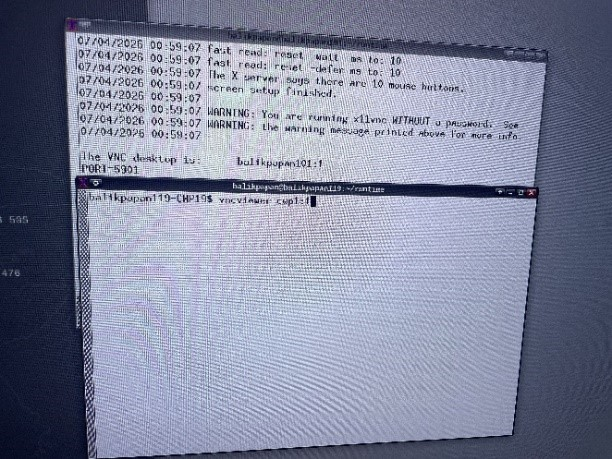
SOP: ATMAS INDRA - MENAMBAH DOKUMEN AIP KE SYSTEM ATMAS
Menambah Document AIP pada CWP
Pada menu INFO di CWP terdapat fungsi untuk membuka dokumen extention .pdf (AIP Document)
1. Siapkan file Document PDF yang akan ditampilkan. Copy Document ke directory
#/local/balikpapan/adap/exec/AIP/others/document2. Jika ingin modifikasi untuk menambah folder di tampilan Paged Information Presentation, Buka di direktory :
#cd /local/balikpapan/adap/exec/AIP/aip.php-files/- Untuk edit ketik
#vi index.html3. Tekan tombol I di keyboard untuk Insert.
Modifikasi di baris
<TR><TD><A TITLE = Others Documents”HREF=”.AIP/others/document”>Documents</A>- Others Documents Nama direktory tampilan
- .AIP/others/document merupakan Direktory files yang tersimpan di
/local/balikpapan/adap/exec/AIP/others/document - Documents itu tampilan awal Paged Information Presentation
4. Jika menambah tab menu di tampilan Paged Information Presentation, maka copy paste command :
<TR><TD><A TITLE = Others Documents”HREF=”.AIP/others/document”>Documents</A>- Modifikasi dan pastikan pada direktori
AIP/others/document”>Documents - Buat folder sesuai dengan keinginan
- Contoh :
<TR><TD><A TITLE = Training”HREF=”.AIP/others/manuals”>Manuals</A>5. Jika sudah selesai modifikasi, tekan ESC
:wq= Keluar dengan save:q= Keluar tanpa save
Ketik
6. Masuk ke DBM
- Username & Password :
DBM - Pilih Database Selection
- Pilih Load Adaptation Data
- Checklist AIP » Klik OK
SOP: ATMAS INDRA - MENAMBAH BACKUP DAN RESTORE CONFIGURATION IN ATMAS SYSTEM
DBM Backup and Restore Database Selection
1. Pada PC DBM
Klik balikpapan, kemudian DBM
2. Masuk ke DBM
- Username :
DBM - Password :
DBM
3. Pada tampilan Database Selection terdapat beberapa menu
Backup
Digunakan untuk backup Database Adaptation
1. Pilih 1 Adaptation Database yang akan di backup
2. Klik button Backup, maka tampilan DBM akan blinking
3. File backup terdapat di direktori
#local/balikpapan/adap/exec/tcl_tk/databases/nama_adaption_database/backup4. Pada direktori tersebut akan muncul file dengan extention .bck lengkap dengan waktu backupnya
5. Rename file .bck jika ingin nama Adaptation Database sesuai keinginan sebelum di restore
CopyDigunakan untuk copy Database Adaptation
1. Pilih 1 Adaptation Database yang akan di copy
2. Klik Button Copy
3. Masukkan nama Adaptation Database di menu New Adaption Creation sesuai keinginan
4. Klik OK
5. Tunggu sampai di menu Database Selection muncul Adaptation Database yang baru sesuai nama yang di buat
DestroyDigunakan untuk menghapus Database Adaptation
SelectDigunakan untuk masuk pada Database Adaptation (Sama dengan Klik 2 kali)
RestoreDigunakan untuk merestore file yang telah di backup dengan extention .bck.
Menu ini akan otomatis membuat database adaptation baru di menu Database Selection
1. Klik Restore (Tidak memilih salah satu Adaptation Database)
2. Pilih file .bck yang akan di restore
3. File .bck ini merupakan file yang sudah di backup sebelumnya yang berada di direktori
#local/balikpapan/adap/exec/tcl_tk/databases/nama_adaption_database/backup4. Klik Open
5. Tunggu sampai muncul Adaptation Database baru di menu Database Selection dengan nama sesuai dengan file .bck
Import DBSama dengan Button Restore yang Digunakan untuk merestore file yang telah di backup dengan extention .bck tetapi perbedaannya, Button Import DB ini akan mereplace existing database yang dipilih.
1. Pilih 1 Adaptation Database
2. Klik Import DB
3. Akan muncul Notifikasi Importing Please Wait
4. Tunggu sampai muncul tab menu Summary Import
4. Jika sudah ada file backup .bck maka langsung saja pilih button Restore (Lihat menu Restore di atas)
5. Buka Adaptation Database baru yang telah di restore
- Subsystem Configuration
- Database Manipulation
- Generate and Load CONFIG_COM
Jika Perubahan pada
- Host Subsystem Nodes,
- Hosts Device IP Configuration,
- System LAN Configuration
- Import CONFIG_COM Body
6. Buka Adaptation Database baru yang telah di restore,
Jika perubahan selain menu 4 di atas maka langsung ke menu
- Generate All Data Files
- Load Adaptation Data
- Checklist Operational & Maps
7. Stop and Start Aplikasi
SOP: VSCS GAREX 300 - USER, PASSWORD AND SSH
A. TMCS LOGIN
- User : gscv
- Pasword : Houston
TMCS for Accsess Configuration, Supervision and Sectorization
B. TMCS LOGIN
- User : root
- Pasword : root
TMCS for Accsess Administration
C. TMCS Puesto
- User : Puesto
- Pasword : Puesto
D. SSH CWP via TMCS
Bisa ssh melalui puesto atau masuk dulu ke root, yang penting ssh ip cwpnya
1. Puesto
2. ROOT
ssh 172.31.53.xxx
maka akan masuk [puesto@cwpxx]$
sudo -i
ssh 172.31.53.xxx
Masukkan Password Houston1.,
maka akan masuk [root@cwpxx]#
E. SSH NEPTUNO via TMCS
Masuk dengan akses user ROOT
ssh neptuno-admin@172.31.53.151Untuk Server Neptuno 1ssh neptuno-admin@172.31.53.152Untuk Server Neptuno 2
sudo -i
Masukkan Password ad-neptuno-1.
F. COPY FILE NEPTUNO via TMCS
Masuk dengan akses user ROOT
ssh neptuno-admin@172.31.53.151Untuk Server Neptuno 1ssh neptuno-admin@172.31.53.152Untuk Server Neptuno 2172.31.53.11 merupakan IP TMCS
Masukkan Password
Houston1.,
sudo -i
Masukkan Password ad-neptuno-1.
Setelah menemukan file yang akan di copy, maka selanjutnya
scp -r file_copy 172.31.53.11 /mnt/(Buat Directory)
Catatan : saat scp dan mengetikkan IP TMCS tidak akan bisa di Tab tapi normal untuk copy
SOP: VSCS GAREX 300 - MENAMBAH RADIO ANALOG
SOP Menambah Radio Analog
A. Settings Pada Radio
1. Pastikan Analog dari Radio sudah siap dimasukkan ke VSCS berupa :
Park Air Electronic (PAE)
| Pin | Transmitter | Receiver | Transceiver |
|---|---|---|---|
| 1 | Audio + | Audio + | Audio TX+ |
| 2 | Audio - | Audio - | Audio TX- |
| 3 | - | - | - |
| - | - | - | Audio RX+ |
| 5 | - | - | Audio RX- |
| 6 | PTT | PTT | - |
| 7 | GND | GND | PTT |
| 8 | - | - | GND |
2. Sambungkan kabel output radio ke krone Gatevox VSCS dengan interkoneksi berikut :
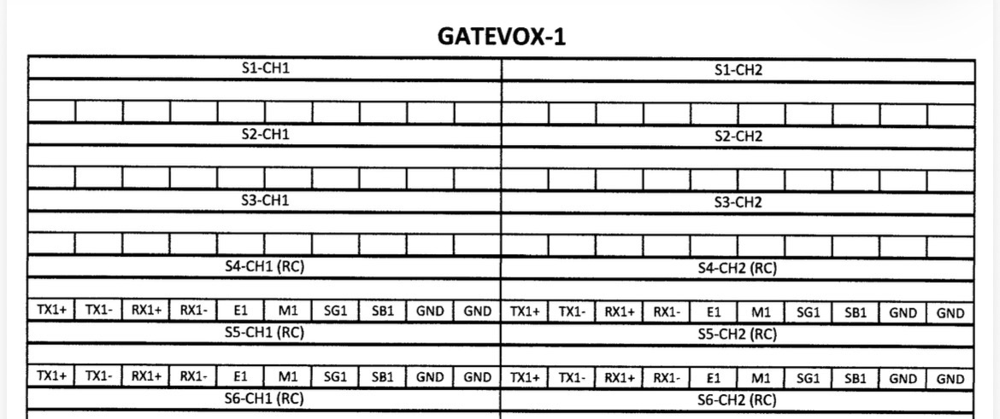
B. Settings Pada TMCS
Copy dahulu configuration eksisting sebagai backup.
Buka configuration yang akan diedit.
HW Configuration
1. Pilih Gatevox.
2. Klik Gatevox 1 maka akan muncul Interface Card
3. Pilih Interface Card sesuai dengan Channel Gatevox misalnya RC1_4-1
4. Klik 2 kali pada Interface Card untuk membuka Card Configuraion
5. Untuk konfigurasi Analog Radio sesuaikan dengan gambar berikut :
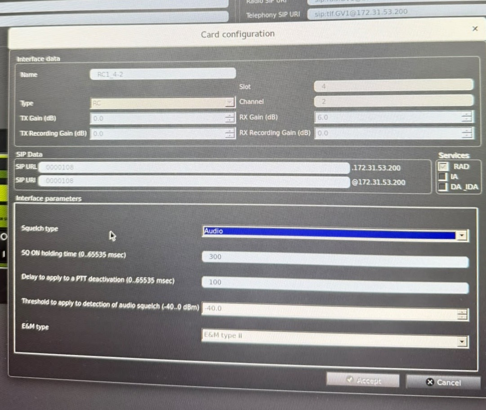
Logical Configuration
1. Pilih Logical Configuration – External Network and Centres.
2. Klik Kanan dan Pilih New Site untuk menambahkan Radio Baru.
3. Klik kanan pada kolom List of Radio Union dan pilih Analog radio union.
4. Isi data pada kolom Radio Union Data.
a. Pilih Topology TxRx = Transmitter dan Receiver
b. Isi kolom TX Link sesuai dengan Channel Gatevox, RX Link akan mengikuti karena tersettings Topology TxRx
c. Atur Radio Union Parameters seperti pada gambar
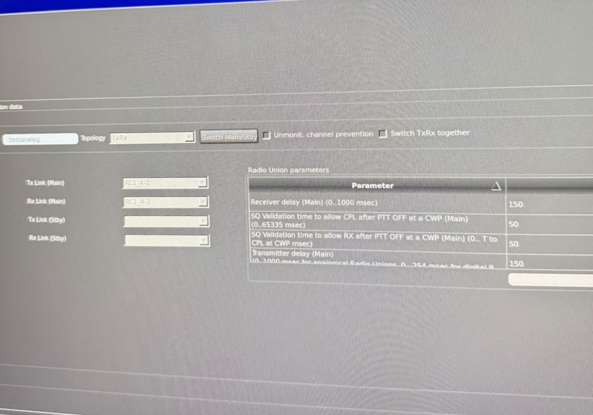
5. Setelah isi semua data, klik Accept.
6. Setelah membuat External Network, Pilih Radio Keys untuk membuat radio button pada CWP.
Pilih Kolok Radio Key dan Klik kanan, pilih new untuk radio baru.
Pilih kolom Radio Unions untuk Assign Radio baru dan klik Accept.
7. Setelah itu pilih Radio Template untuk penempatan assign Radio baru.
8. Pilih source radio dari Analog.
9. Klik kanan untuk assign dan klik Accept ketika sudah selesai.
10. Kemudian Pilih Roles.
Pilih Standart – Pilih name roles mana yang akan di assign.
Pilih Radio Resources untuk Assign Radio baru dengan cara klik kanan, pilih assign dan klik Accept.
Pilih Sector - Pilih name sector mana yang akan di assign.
Pilih Radio Resources untuk Assign Radio baru dengan cara klik kanan, pilih assign dan klik Accept.
SOP: VSCS GAREX 300 - MENAMBAH RADIO IP
A. Setting pada radio
1. IP
2. Gateway
3. Subnetmask
4. SIP Port (5060)
5. Own URI (URI Radio)
6. Allowed URI (URI VSCS = garex300) pada radio
B. Settingan pada TMCS
1. Copy dahulu configuration eksisting sebagai backup.
2. Buka configuration yang akan diedit.
3. Pilih Logical Configuration – External Network and Centres.
4. Klik Kanan dan Pilih New Site untuk menambahkan Radio Baru.
5. Klik kanan pada kolom List of Radio Union dan pilih Create radio union trough IPRN.
6. Isi data pada kolom Radio Union Data.
TxRx = Transmitter
Tx + Rx = Transmitter & Receiver
Main: TxRx / Stby: TxRx
Main: TxRx / Stby: Tx+Rx
Main: Tx+Rx / Stby: TxRx
Main: Tx+Rx / Stby: Tx+Rx
a. Pillih Topology yang digunakan.
b. Isi kolom SIP URI dengan IP radio.
7. Setelah isi semua data, klik Accept.
8. Setelah membuat External Network, Pilih Radio Keys untuk membuat radio button pada CWP.
Pilih Kolok Radio Key dan Klik kanan, pilih new untuk radio baru.
Pilih kolom Radio Unions untuk Assign Radio baru dan klik Accept.
- Pilih source radio dari IP.
- Klik kanan untuk assign dan klik Accept ketika sudah selesai.
9. Setelah itu pilih Radio Template untuk penempatan assign Radio baru.
10. Kemudian Pilih Roles.
Pilih Standart – Pilih name roles mana yang akan di assign.
Pilih Radio Resources untuk Assign Radio baru dengan cara klik kanan, pilih assign dan klik Accept.
Pilih Sector - Pilih name sector mana yang akan di assign.
Pilih Radio Resources untuk Assign Radio baru dengan cara klik kanan, pilih assign dan klik Accept.
SOP: VSCS GAREX 300 - MENAMBAH TELEPON ANALOG / DIRECT SPEECH
A. Settingan pada TMCS
1. Copy dahulu configuration eksisting sebagai backup.
2. Buka configuration yang akan diedit.
3. Pilih Logical Configuration – External Network and Centres.
4. Klik Kanan dan Pilih:
New External Center = Direct Speech
New External Network = SLJJ / PABX Internal
5. Klik kanan pada kolom Trunk dan pilih New.
Pilih Gatevox 1 / 2.
Pilih Link Type yang digunkan FXO, FXS, CBS (FXO), CBC (FXS).
Catatan : SLJJ menggunakan FXO / FXS.
DS menggunakan CBS / CBC.
6. Pilih kolom Destination dan klik kanan, pilih New.
Untuk SLJJ / PABX, masukkan nomor tujuan.
Untuk DS,
masukkan data nama DS,
Pada kolom Destination Link Configuration, klik kanan dan pilih new, pilih Gatevox yang digunakan dan pilih accept.
Pada kolom Destination Link Data, Pilih Link Type dan Link Name yang digunakan.
Pada Kolom Destination Role List, Assign DS ke Role mana saja yang akan menggunakan.
Klik Accept jika semua settingan data data sesuai.
7. Setelah membuat External Network, Pilih Telephony Template untuk penempatan assign Telephone SLJJ/PABX/DS baru, Pilih pada Roles mana yang akan ditempatkan Telephone SLJJ/PABX/DS, Setelah itu pilih Klik kanan untuk assign dan klik Accept ketika sudah selesai.
8. Kemudian Pilih Roles – Telephony Resources untuk Assign DS/PABX baru dengan cara klik kanan, pilih assign dan klik Accept.
9. Kemudian Pilih Roles – Network Access untuk Assign Telephone SLJJ baru dengan cara klik kanan, pilih assign dan klik Accept.
Catatan : Aktifkan Accessible Network ke all network.
SOP: VSCS GAREX 300 - BACKUP TMCS
A. MENGGUNAKAN APLIKASI
- Pilih Database
- Pilih Manual Backup
- Pilih Penyimpanan Dimana
- Buka Terminal
- Beri Permission untuk membuka file backup
- Extract file backup
- Execute file backup
chmod -R 777 namafilebackup.gz
ls -lart (untuk memastikan sudah diberi permission)
gunzip namafilebackup.gz
ls -lart
../scr/TMCS_DBTM_scr_unix_encrypt.sh -d namafilebackup.sqil.enc(file yang akan dicopy) namafilebackup.sql(file yang sudah dicopy dan akan diexecute)
B. MENGGUNAKAN TERMINAL
- Buka terminal
- Lanjutkan cara permission, extract dan execute seperti langkah menggunakan aplikasi
mysqldump -u root tmcs > Balikpapan.sql
C. CARA UPLOAD DAN MENGGUNAKAN FILE BACKUP DI USB/FLASHDISK
- Buka terminal
Biasanya untuk flasdisk atau disk berada pada sdb atau sdc
- Cek file backup pada usb/flasdisk
- Shutdown semua aplikasi TMCS
- Copy filebackup dari flashdisk ke aplikasi TMCS
- Cek file yang sudah dicopy di folder tujuan
- Execute file backup
- Umount FLASDISK
umount /dev/sdb1
sudo su
fdisk -l
mount /dev/sdb1 /mnt
cd /run/media/puesto/namafd (umount di directory /mnt)
scp -r namafile.sql /tmp/
cd /tmp/
mysql -u root tmcs < namafilebackup.sql
SOP: VSCS GAREX 300 - CONFIG IP CWP VSCS GAREX
A. Config untuk CWP
- 1. Masuk terminal
- 2. Masuk ke CWP yang dituju
- 3. Ganti nama CWP dengan press
i, setelah Ganti nama, tekanEsc - 4. Save config
- 5. Ganti IP dengan press
i, setelah Ganti,Esc - 6. Ganti IP dan nama CWP dengan press
isetelah Ganti, tekanEsc - 7. Ganti instancia sesuai dengan CWP dengan press
isetelah Ganti, tekanEsc - 8. Reboot
sudo su
ssh puesto@172.31.0.107
sudo su
vi /etc/hostname
wq!
cd /etc/sysconfig/network-scripts
vi ifcfg-bond0
wq!
vi etc/hosts
wq!
vi /vcs/runtime/Etiqueta_hw
wq!
B. Config Hardware di TMCS Main
- 1. Buat CWP pada HW Configuration
- a. Nama CWP
- b. IP CWP
2. Buat Line dalam room di Supervision dan buat line HW CWP di semua room
3. Setelah Ganti IP Address CWP dan Config hardware di TMCS Main
4. Copy file.txt ke dat, tmp dan emergency
scp -r config sdcxxi_*.txt puesto@172.x.x.x:/vcs/runtime/dat(IP CWP yang dituju)
scp -r config sdcxxi_*.txt puesto@172.x.x.x:/vcs/runtime/tmp(IP CWP yang dituju)
scp -r config sdcxxi_*.txt puesto@172.x.x.x:/vcs/runtime/emergency(IP CWP yang dituju)
Catatan :
- - Jika ubah IP dari TMCS, auto reboot CWP
- - Jika ubah IP dari CWP, harus command reboot
- - Password : Houston1.,
SOP: VSCS GAREX 300 - CWP STUCK
1. Restart system/hardware via TMCS dengan remote admin
Username : root
Password : root
2. Klik kanan pada CWP yang akan direstart, tunggu hingga proses selesai
3. Apabila masih stuck, remote CWP yang stuck melalu terminal di TMCS
4. Buka terminal dan ketik
ssh puesto@172.31.53.xxxIP CWP yang stuck (yang akan diremote)
5. Masuk ke root dengan ketik
sudo suMasukan password Houston1.,
6. Restart CWP yang stuck dengan masuk ke /vcs/runtime dan jalankan command
./shutdown.sh kemudian ./startup.sh
7. Lihat hasil errornya, contoh error pada /vcs/runtime/dat/emergency/config_sdcxxi_hw.txt
8. Lanjutkan proses startup selesai hingga line CWP hijau
9. Buka terminal baru untuk membandingkan folder/file yang hilang pada CWP yang normal
10. Copy folder/file yang hilang dari CWP yang normal di directory
/vcs/runtime/dat/emergency
scp -r config_sdcxxi_hw.txt puesto@172.31.53.xxx:/vcs/runtime/dat/emergencyIP CWP yang stuck/tujuan
scp -r config_sdcxxi_log_sect_a.txt puesto@172.31.53.xxx:/vcs/runtime/dat/emergencyIP CWP yang stuck/tujuan
scp -r config_sdcxxi_log_sect_b.txt puesto@172.31.53.xxx:/vcs/runtime/dat/emergencyIP CWP yang stuck/tujuan
12. Setelah berhasil copy folder”/file” tersebut, jalankan perintah
./shutdown.sh./startup.sh
13. Hasil line dan CWp yang stuck akan normal
SOP: VSCS GAREX 300 - RESTORE DATABASE DARI TMCS 1 KE TMCS 2
1. Buka terminal
sudo su
2. Shutdown semua TMCS
/vcs/runtime/shutdown.sh
cd /vcs/runtime/dat
ls -lart
mysql -u root tmcs < namafile.sql
3. Startup TMCS 1
/vcs/runtime/startup.sh
4. Masuk ke SPV, pastikan status TMCS 2 (bila masih merah), startup TMCS 2 via terminal PC
TMCS 2 (tunggu max.5 menit hingga indicator green)
5. Bila masih merah
ssh-copy-id IPTMCS2
6. Bila masih merah
ssh-copy-id puesto@IPTMCS2
7. Bila masih merah
ssh-copy-id root@IPTMCS2
8. Apabila 3 langkah di atas masih gagal, reboot TMCS yang fail
9. Bila masih gagal
mount -o remount /var
SOP: NEPTUNO - USER, PASSWORD AND SSH
A. NEPTUNO LOGIN
-
User : neptuno-admin -
Pasword : ad-neptuno-1.
B. WEB NEPTUNO LOGIN
-
User : root -
Pasword : root
C. COPY FILE NEPTUNO TO ATMAS VIA PLAYBACK NEPTUNO
Masuk dengan akses user ROOT
Cari file yang akan di copy pada Playback Neptuno, maka selanjutnya
Masukkan Password
indrarootMaka file dari Playback Neptuno akan tercopy di CWP21
sudo -i
scp -r file_copy cwp21:/mnt/(Buat Directory)
Catatan : saat scp dan mengetikkan Playback Neptuno tidak akan bisa di Tab tapi normal untuk copy
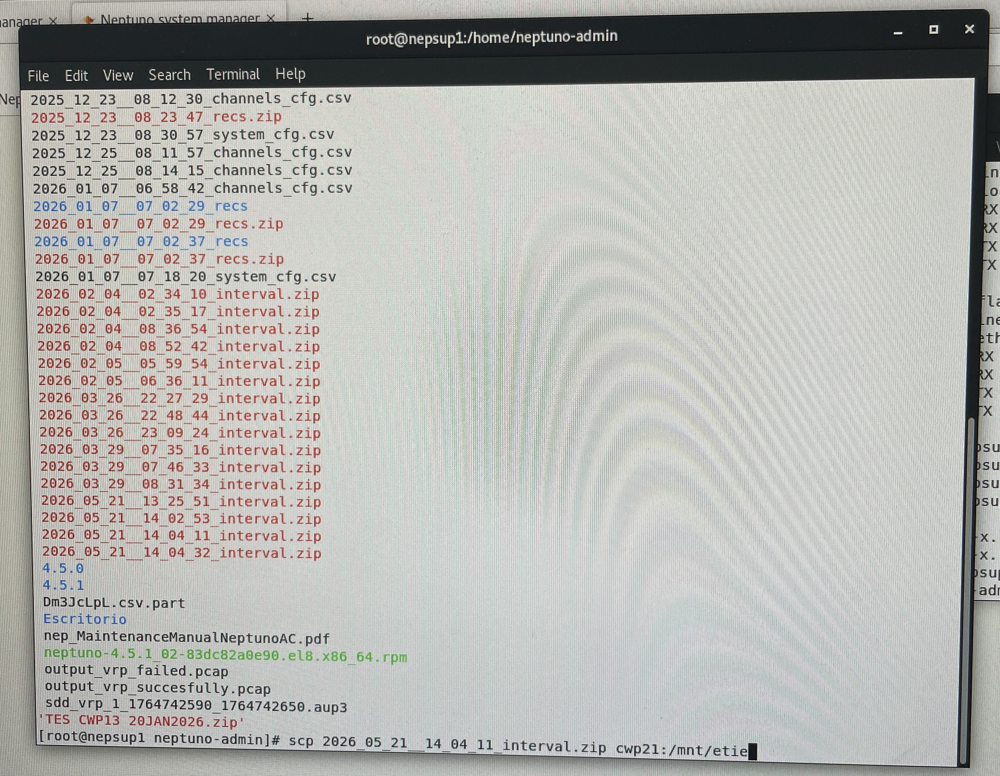
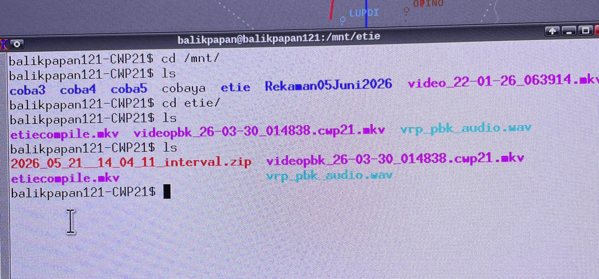
SOP: NEPTUNO - VRP ALARM
A. REBOOT SERVICE NEPTUNO
1. Via TMCS, buka terminal dan ketik command
ssh neptuno-admin@172.31.53.151password:
ad-neptuno-1.
2. masuk root
sudo -i
3. Cek service mana yang alarm
monit summary
4. Restart service yang alarm, contoh:
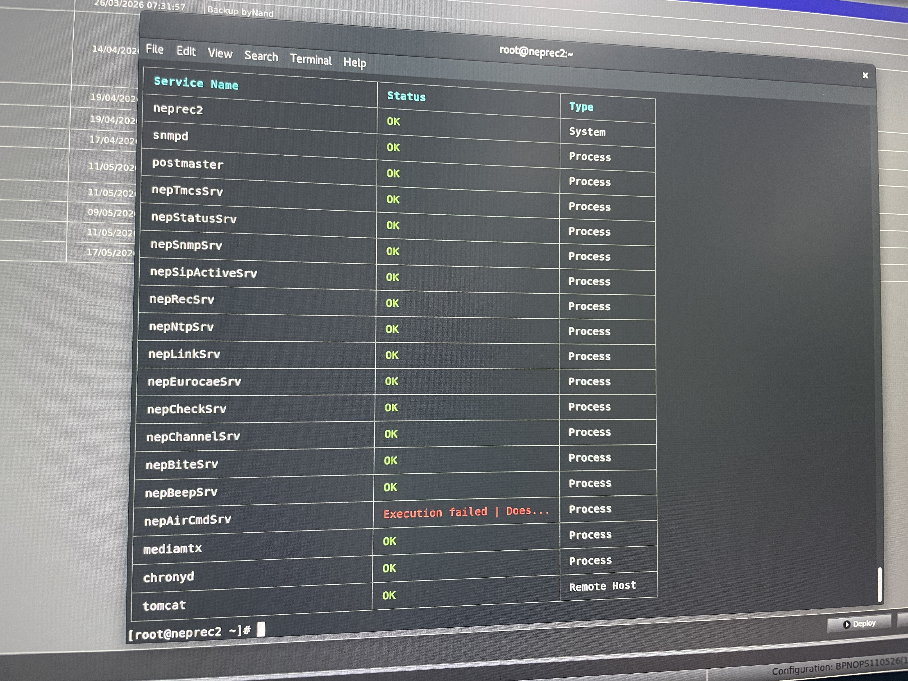
restart systemctl nepAirCmdSrv
5. Jika belum bisa, reboot server neptuno
CATATAN : APABILA SERVER NEPTUNO SUDAH DI REBOOT MAKA OTOMATIS HARDISK EXTERNAL AKAN UMOUNT, MAKA PERLU DILAKUKAN MOUNT MANUAL DI WEB
B. MOUNT EXTERNAL DISK WEB
1. Apabila menemukan alarm “New media is needed on backup unit 1,2”
2. Mount kembali via web di server yang alarm
Username : root
Password : root
3. Pilih menu Backup, Lihat Backup Status dan akan tertampil 2 hardisk (HD 1 dan HD 2) dengan status EMPTY
4. Centang 2 Hardisk External tersebut dan pilih icon Mount
5. Maka 2 hardisk tersebut sudah otomatis terbackup dan alarm akan hilang
SOP: LOCALIZER SELEX - PEMELIHARAAN RUTIN
SOP Pemeliharaan Rutin Selex belum diisi.
SOP: LOCALIZER SELEX - SAFE SHUTDOWN PERANGKAT
SOP Shutdown Perangkat Selex belum diisi.
SOP: MIDDLE MARKER SELEX - CHECK PARAMETER RUTIN
SOP Check Parameter Rutin Selex belum diisi.